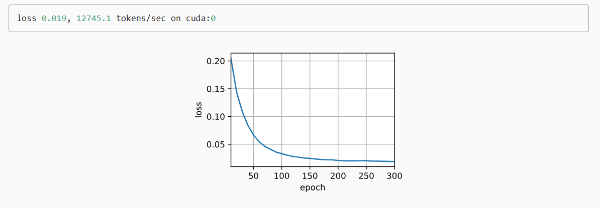

本内容参考动手学深度学习。
在学习循环神经网络$(Recurrent Neural Network, RNN)$之前先了解一下序列模型，序列模型是专门用于处理和预测序列数据的模型。在自然语言处理、音频处理和时间序列处理有广泛的应用。
举例来说，用$x_{t}$表示价格，即在时间步$t \in \mathbb{Z}^+$，观察价格$x_{t}$，假设交易员想在$t$日预测股市的价格，可以表现为：
自回归模型 自回归模型 ：假设在现实情况下$x_{t-1}, \ldots, x_1$是不必要的，因此只需要满足长度为$\tau$的时间跨度， 即使用观测序列$x_{t-1}, \ldots, x_{t-\tau}$。当下获得的最直接的好处就是参数的数量总是不变的，至少在$t > \tau$是如此，这种模型被称为自回归模型 $（autoregressive models）$，因为它对自己执行回归。
隐变量自回归模型 ：是保留一些对过去观测的总结$h_{t}$， 并且同时更新预测$\hat{x}t$和总结$h {t}$。这就产生了基于$\hat{x}t = P(x_t \mid h {t})$估计$x_t$,以及公式$h_t = g(h_{t-1}, x_{t-1})$更新模型，因为$h_{t}$从未被观测到，这种模型被称为隐变量自回归模型 $（latent autoregressive models）$
马尔可夫模型 在自回归模型的近似法中，使用$x_{t-1}, \ldots, x_{t-\tau}$来估计$x_{t}$ ，而不是$x_{t-1}, \ldots, x_1$，只要这种是近似精确的，我们就说满足马尔可夫条件。特殊的，如果$\tau$<1得到一阶马尔可夫模型$first-order Markov model）$
文本预处理 读取数据集 1 2 3 4 5 6 7 8 9 10 11 12 13 14 'time_machine' ] = (d2l.DATA_URL + 'timemachine.txt' ,'090b5e7e70c295757f55df93cb0a180b9691891a' )def read_time_machine (): """将时间机器数据集加载到文本行的列表中""" with open (d2l.download('time_machine' ), 'r' ) as f:return [re.sub('[^A-Za-z]+' , ' ' , line).strip().lower() for line in lines]print (f'# 文本总行数: {len (lines)} ' )print (lines[0 ])print (lines[10 ])
输出：
1 2 3 4 Downloading ../data/timemachine.txt from http ://d2l-data.s3-accelerate.amazonaws.com/timemachine.txt...the time machine by h g wellsand his usually pale face was flushed and animated the
词元化 1 2 3 4 5 6 7 8 9 10 11 12 13 14 def tokenize (lines, token='word' ): """将文本行拆分为单词或字符词元""" if token == 'word' :return [line.split() for line in lines]elif token == 'char' :return [list (line) for line in lines]else :print ('错误：未知词元类型：' + token)for i in range (11 ):print (tokens[i])
例：
1 2 3 4 5 6 7 8 9 10 11 12 13 14 15 16 17 18 19 20 21 22 "Hello world" ,"This is a test." ,"Tokenize me!" ,"How are you?" ,"I hope this works!" ,"Let's see the output." ,"This function is simple." ,"Please split by words." ,"Test the character tokenization." ,"What do you think?" ,"Enjoy learning!" 'word' )for i in range (11 ):print (tokens[i])
输出：
[‘Hello’, ‘world’]
词表 将字符串类型得词元映射到从0开始的数字索引中。根据词元出现的频率，分配数字索引。语料库中不存在或已删除的任何词元都将映射到一个特定的未知词元“”。同时增加一个列表，用于保存那些被保留的词元， 例如：填充词元（“”）； 序列开始词元（“”）； 序列结束词元（“”）。
1 2 3 4 5 6 7 8 9 10 11 12 13 14 15 16 17 18 19 20 21 22 23 24 25 26 27 28 29 30 31 32 33 34 35 36 37 38 39 40 41 42 43 44 45 46 47 48 49 50 51 52 class Vocab : """文本词表""" def __init__ (self, tokens=None , min_freq=0 , reserved_tokens=None ):if tokens is None :if reserved_tokens is None :self ._token_freqs = sorted (counter.items(), key=lambda x: x[1 ],True )self .idx_to_token = ['<unk>' ] + reserved_tokensself .token_to_idx = {token: idxfor idx, token in enumerate (self .idx_to_token)}for token, freq in self ._token_freqs:if freq < min_freq:break if token not in self .token_to_idx:self .idx_to_token.append(token)self .token_to_idx[token] = len (self .idx_to_token) - 1 def __len__ (self ):return len (self .idx_to_token)def __getitem__ (self, tokens ):if not isinstance (tokens, (list , tuple )):return self .token_to_idx.get(tokens, self .unk)return [self .__getitem__(token) for token in tokens]def to_tokens (self, indices ):if not isinstance (indices, (list , tuple )):return self .idx_to_token[indices]return [self .idx_to_token[index] for index in indices] @property def unk (self ): return 0 @property def token_freqs (self ):return self ._token_freqsdef count_corpus (tokens ): """统计词元的频率""" if len (tokens) == 0 or isinstance (tokens[0 ], list ):for line in tokens for token in line]return collections.Counter(tokens)
整合所有功能 1 2 3 4 5 6 7 8 9 10 11 12 13 14 def load_corpus_time_machine (max_tokens=-1 ): """返回时光机器数据集的词元索引列表和词表""" 'char' )for line in tokens for token in line]if max_tokens > 0 :return corpus, vocablen (corpus), len (vocab)
语言模型 根据上面提到的自回归模型和马尔可夫模型，将语言模型定义为：
马尔可夫模型与n元语法 如果$P(x_{t+1} \mid x_t, \ldots, x_1) = P(x_{t+1} \mid x_t)$， 则序列上的分布满足一阶马尔可夫性质。 阶数越高，对应的依赖关系就越长。
$$
循环神经网络 循环神经网络 （recurrent neural networks，RNNs） 是具有隐状态的神经网络。与感知机不同的是，保存了前一个时间步的隐藏变量$\mathbf{H}{t-1}$,并引入了一个新的权重参数$\mathbf{W} {hh} \in \mathbb{R}^{h \times h}$当前时间步隐藏变量由当前时间步的输入 与前一个时间步的隐藏变量一起计算得出：
t = \phi(\mathbf{X}t \mathbf{W} {xh} + \mathbf{H} {t-1} \mathbf{W}_{hh} + \mathbf{b}_h).
$$t \mathbf{W} {hq} + \mathbf{b}_q.
循环神经网络的损失函数(困惑度) $$
其中P表示语言模型的预测概率，$x_{t}$表示真实值。
循环神经网络的应用
代码实现(手动) 整体模型架构 数据加载 1 2 3 4 5 6 7 8 9 %matplotlib inlineimport mathimport torchfrom torch import nnfrom torch.nn import functional as Ffrom d2l import torch as d2l32 , 35
初始化模型参数 1 2 3 4 5 6 7 8 9 10 11 12 13 14 15 16 17 18 def get_params (vocab_size, num_hiddens, device ):def normal (shape ):return torch.randn(size=shape, device=device) * 0.01 for param in params:True )return params
在一个时间步内计算隐状态和输出 1 2 3 4 5 6 7 8 9 10 11 def rnn (inputs, state, params ):for X in inputs:return torch.cat(outputs, dim=0 ), (H,)
创建类包装函数 1 2 3 4 5 6 7 8 9 10 11 12 13 14 class RNNModelScratch : """从零开始实现的循环神经网络模型""" def __init__ (self, vocab_size, num_hiddens, device, get_params, init_state, forward_fn ):self .vocab_size, self .num_hiddens = vocab_size, num_hiddensself .params = get_params(vocab_size, num_hiddens, device)self .init_state, self .forward_fn = init_state, forward_fndef __call__ (self, X, state ):self .vocab_size).type (torch.float32)return self .forward_fn(X, state, self .params)def begin_state (self, batch_size, device ):return self .init_state(batch_size, self .num_hiddens, device)
预测函数 1 2 3 4 5 6 7 8 9 10 11 12 def predict_ch8 (prefix, num_preds, net, vocab, device ): """在prefix后面生成新字符""" 1 , device=device)0 ]]]lambda : torch.tensor([outputs[-1 ]], device=device).reshape((1 , 1 ))for y in prefix[1 :]: for _ in range (num_preds): int (y.argmax(dim=1 ).reshape(1 )))return '' .join([vocab.idx_to_token[i] for i in outputs])
梯度裁剪 $$
1 2 3 4 5 6 7 8 9 10 def grad_clipping (net, theta ): """裁剪梯度""" if isinstance (net, nn.Module):for p in net.parameters() if p.requires_grad]else :sum (torch.sum ((p.grad ** 2 )) for p in params))if norm > theta:for param in params:
训练 1 2 3 4 5 6 7 8 9 10 11 12 13 14 15 16 17 18 19 20 21 22 23 24 25 26 27 28 29 30 31 32 33 def train_epoch_ch8 (net, train_iter, loss, updater, device, use_random_iter ):"""训练网络一个迭代周期（定义见第8章）""" None , d2l.Timer()2 ) for X, Y in train_iter:if state is None or use_random_iter:0 ], device=device)else :if isinstance (net, nn.Module) and not isinstance (state, tuple ):else :for s in state:1 )if isinstance (updater, torch.optim.Optimizer):1 )else :1 )1 )return math.exp(metric[0 ] / metric[1 ]), metric[1 ] / timer.stop()
1 2 3 4 5 6 7 8 9 10 11 12 13 14 15 16 17 18 19 20 21 22 23 def train_ch8 (net, train_iter, vocab, lr, num_epochs, device, use_random_iter=False ):"""训练模型（定义见第8章）""" 'epoch' , ylabel='perplexity' ,'train' ], xlim=[10 , num_epochs])if isinstance (net, nn.Module):else :lambda batch_size: d2l.sgd(net.params, lr, batch_size)lambda prefix: predict_ch8(prefix, 50 , net, vocab, device)for epoch in range (num_epochs):if (epoch + 1 ) % 10 == 0 :print (predict('time traveller' ))1 , [ppl])print (f'困惑度 {ppl:.1 f} , {speed:.1 f} 词元/秒 {str (device)} ' )print (predict('time traveller' ))print (predict('traveller' ))
1 2 num_epochs, lr = 500 , 1
输出：
1 2 3 困惑度 1.0 , 67212.6 词元/秒 cuda:0 for so it will be convenient to speak of himwas e is white by argument said filby
代码简洁实现 1 2 3 4 5 6 7 import torchfrom torch import nnfrom torch.nn import functional as Ffrom d2l import torch as d2l32 , 35
1 2 3 4 num_hiddens = 256 len (vocab), num_hiddens)1 , batch_size, num_hiddens))
1 2 3 X = torch.rand(size=(num_steps, batch_size, len (vocab)))
1 2 3 4 5 6 7 8 9 10 11 12 13 14 15 16 17 18 19 20 21 22 23 24 25 26 27 28 29 30 31 32 33 34 35 36 37 38 39 class RNNModel (nn.Module):"""循环神经网络模型""" def __init__ (self, rnn_layer, vocab_size, **kwargs ):super (RNNModel, self ).__init__(**kwargs)self .rnn = rnn_layerself .vocab_size = vocab_sizeself .num_hiddens = self .rnn.hidden_sizeif not self .rnn.bidirectional:self .num_directions = 1 self .linear = nn.Linear(self .num_hiddens, self .vocab_size)else :self .num_directions = 2 self .linear = nn.Linear(self .num_hiddens * 2 , self .vocab_size)def forward (self, inputs, state ):self .vocab_size)self .rnn(X, state)self .linear(Y.reshape((-1 , Y.shape[-1 ])))return output, statedef begin_state (self, device, batch_size=1 ):if not isinstance (self .rnn, nn.LSTM):return torch.zeros((self .num_directions * self .rnn.num_layers,self .num_hiddens),else :return (torch.zeros((self .num_directions * self .rnn.num_layers,self .num_hiddens), device=device),self .num_directions * self .rnn.num_layers,self .num_hiddens), device=device))
1 2 3 4 device = d2l.try_gpu()len (vocab))'time traveller' , 10 , net, vocab, device)
循环神经网络的应用——GRU(门控循环单元) 文章中举了一个书籍中段落的例子，各个章节可能存在逻辑中断，在这种情况下，也为缓解梯度的异常的问题，使用GRU的方法重置内部的状态。
门控循环单元与普通循环神经网路关键区别在于有专门的机制更新隐状态和重置隐状态。
重置门和更新门
输入小批量$\mathbf{X}t \in \mathbb{R}^{n \times d}$(样本个数$n$，输入个数$d$)，上一步的隐状态是$\mathbf{H} {t-1} \in \mathbb{R}^{n \times h}$则重置门$\mathbf{R}t \in \mathbb{R}^{n \times h}$和更新门$\mathbf{Z}t \in \mathbb{R}^{n \times h}$表示为t = \sigma(\mathbf{X}t \mathbf{W} {xr} + \mathbf{H} {t-1} \mathbf{W} {hr} + \mathbf{b}r),\t = \sigma(\mathbf{X}t \mathbf{W} {xz} + \mathbf{H} {t-1} \mathbf{W} {hz} + \mathbf{b}z), {xr}, \mathbf{W} {xz} \in \mathbb{R}^{d \times h}$为权重，$\mathbf{b}_r, \mathbf{b}_z \in \mathbb{R}^{1 \times h}$为偏置
候选隐状态 $$t = \tanh(\mathbf{X}t \mathbf{W} {xh} + \left(\mathbf{R}t \odot \mathbf{H} {t-1}\right) \mathbf{W} {hh} + \mathbf{b}_h),
$\odot$ 表示哈达玛积，$W,b$分别为权重和偏置。
隐状态 上述的计算结果只是候选隐状态，我们仍然需要结合更新门Zt的效果。此时，来自$X_{t}$的信息基本上被忽略。相反，当$Z_{t}$接近0时， 新的隐状态$\mathbf{H}_t$就会接近候选隐状态$\tilde{\mathbf{H}}_t$。这些设计可以处理循环神经网络中的梯度消失问题.t \odot \mathbf{H} {t-1} + (1 - \mathbf{Z}_t) \odot \tilde{\mathbf{H}}_t.
长短期记忆网络(LSTM) 输入门、忘记门、输出门 t &= \sigma(\mathbf{X}t \mathbf{W} {xi} + \mathbf{H} {t-1} \mathbf{W}_{hi} + \mathbf{b}i),\t &= \sigma(\mathbf{X}t \mathbf{W} {xf} + \mathbf{H} {t-1} \mathbf{W} {hf} + \mathbf{b}f),\t &= \sigma(\mathbf{X}t \mathbf{W} {xo} + \mathbf{H} {t-1} \mathbf{W} {ho} + \mathbf{b}_o),
候选记忆单元 $$t = \text{tanh}(\mathbf{X}t \mathbf{W} {xc} + \mathbf{H} {t-1} \mathbf{W}_{hc} + \mathbf{b}_c),
记忆元 $$t \odot \mathbf{C} {t-1} + \mathbf{I}_t \odot \tilde{\mathbf{C}}_t.
隐状态 $$
深度循环神经网络
基础公式为：t^{(l)} = \phi_l(\mathbf{H}t^{(l-1)} \mathbf{W} {xh}^{(l)} + \mathbf{H} {t-1}^{(l)} \mathbf{W}_{hh}^{(l)} + \mathbf{b}_h^{(l)}),t^{(L)} \mathbf{W} {hq} + \mathbf{b}_q,
双向循环神经网络
$$t &= \phi(\mathbf{X}t \mathbf{W} {xh}^{(f)} + \overrightarrow{\mathbf{H}} {t-1} \mathbf{W}_{hh}^{(f)} + \mathbf{b}h^{(f)}),\t &= \phi(\mathbf{X}t \mathbf{W} {xh}^{(b)} + \overleftarrow{\mathbf{H}} {t+1} \mathbf{W} {hh}^{(b)} + \mathbf{b}_h^{(b)}),连接 ，获得需要送入输出层的隐状态$\mathbf{H}_t \in \mathbb{R}^{n \times 2h}$。在具有多个隐藏层的深度双向循环神经网络中， 该信息作为输入传递到下一个双向层。 最后，输出层计算得到的输出为$\mathbf{O}_t \in \mathbb{R}^{n \times q}$($q$是输出单元的数目)t \mathbf{W} {hq} + \mathbf{b}_q.拼接（Concatenation） 和加和（Summation）
拼接：在双向RNN中，时间步t的隐藏层输出将是这两个隐藏状态的拼接：
1 lstm_layer = nn.LSTM(num_inputs, num_hiddens, num_layers, bidirectional=True )
bidirectional=True 双向循环网络的开关
编码器与解码器 序列转换是核心问题，为了处理输入和输出，设计一个包含两个组件的架构：编码器和解码器**(encoder-decoder)**
编码器，继承nn.module模型
1 2 3 4 5 6 7 8 9 10 11 from torch import nnclass Encoder (nn.Module):"""编码器-解码器架构的基本编码器接口""" def __init__ (self, **kwargs ):super (Encoder, self ).__init__(**kwargs)def forward (self, X, *args ):raise NotImplementedError
解码器，新增init_state函数，用于将编码器的输出（enc_outputs）转换为编码后的状态。
1 2 3 4 5 6 7 8 9 10 11 class Decoder (nn.Module):"""编码器-解码器架构的基本解码器接口""" def __init__ (self, **kwargs ):super (Decoder, self ).__init__(**kwargs)def init_state (self, enc_outputs, *args ):raise NotImplementedErrordef forward (self, X, state ):raise NotImplementedError
合并编码器和解码器
1 2 3 4 5 6 7 8 9 10 11 12 class EncoderDecoder (nn.Module):"""编码器-解码器架构的基类""" def __init__ (self, encoder, decoder, **kwargs ):super (EncoderDecoder, self ).__init__(**kwargs)self .encoder = encoderself .decoder = decoderdef forward (self, enc_X, dec_X, *args ):self .encoder(enc_X, *args)self .decoder.init_state(enc_outputs, *args)return self .decoder(dec_X, dec_state)
序列到序列学习
特定的“”表示序列结束词元。 一旦输出序列生成此词元，模型就会停止预测。 “”表示序列开始词元，它是解码器的输入序列的第一个词元。
编码器 $x_{t}$是文本序列中的第$t$个词元，$t$为时间步，$h_{t-1}$为上一时间步的状态。使用一个函数$f$来描述循环神经网络的循环层所做的变换：t, \mathbf{h} {t-1}).
1 2 3 4 5 6 7 8 9 10 11 12 13 14 15 16 17 18 19 20 21 class Seq2SeqEncoder (d2l.Encoder):"""用于序列到序列学习的循环神经网络编码器""" def __init__ (self, vocab_size, embed_size, num_hiddens, num_layers, dropout=0 , **kwargs ):super (Seq2SeqEncoder, self ).__init__(**kwargs)self .embedding = nn.Embedding(vocab_size, embed_size)self .rnn = nn.GRU(embed_size, num_hiddens, num_layers,def forward (self, X, *args ):self .embedding(X)1 , 0 , 2 )self .rnn(X)return output, state
解码器 编码器输出的上下文变量$c$对整个序列$x_1, \ldots, x_T$进行编码。来自训练数据集的输出序列$y_1, y_2, \ldots, y_{T’}$，对于每个时间步$t’$，解码器的$y_{t’}$概率取决于$y_1, \ldots, y_{t’-1}$和上下文变量$c$，即$P(y_{t’} \mid y_1, \ldots, y_{t’-1}, \mathbf{c})${t^\prime} = g(y {t^\prime-1}, \mathbf{c}, \mathbf{s}_{t^\prime-1}).
1 2 3 4 5 6 7 8 9 10 11 12 13 14 15 16 17 18 19 20 21 22 23 24 25 26 class Seq2SeqDecoder (d2l.Decoder):"""用于序列到序列学习的循环神经网络解码器""" def __init__ (self, vocab_size, embed_size, num_hiddens, num_layers, dropout=0 , **kwargs ):super (Seq2SeqDecoder, self ).__init__(**kwargs)self .embedding = nn.Embedding(vocab_size, embed_size)self .rnn = nn.GRU(embed_size + num_hiddens, num_hiddens, num_layers,self .dense = nn.Linear(num_hiddens, vocab_size)def init_state (self, enc_outputs, *args ):return enc_outputs[1 ]def forward (self, X, state ):self .embedding(X).permute(1 , 0 , 2 )1 ].repeat(X.shape[0 ], 1 , 1 )2 )self .rnn(X_and_context, state)self .dense(output).permute(1 , 0 , 2 )return output, state
损失函数 构建sequence_mask函数通过零值化屏蔽不相关项：
1 2 3 4 5 6 7 8 9 10 def sequence_mask (X, valid_len, value=0 ):"""在序列中屏蔽不相关的项""" 1 )None , :] < valid_len[:, None ]return X1 , 2 , 3 ], [4 , 5 , 6 ]])1 , 2 ]))
代码理解：
**maxlen = X.size(1)**：获取 X 张量的最大长度（即序列的最大步数）。在例子中，X 的形状是 (2, 3)，所以 maxlen 将是 3
mask = torch.arange((maxlen), dtype=torch.float32, device=X.device)[None, :] < valid_len[:, None]：
None的作用：在 NumPy 和 PyTorch 中是用来增加新维度的。它通常与切片操作结合使用，来添加一个新的轴。
[None, :] 的含义：None 放在前面（[None, :]）表示在第一个轴（即行轴）上增加一个新的维度。
例：
1 2 3 4 a = torch.tensor([1 , 2 , 3 ])None , :]print (b.shape)
valid_len[:, None]的含义：在函数的末尾增加一个维度。
1 2 3 valid_len = torch.tensor([1 , 2 , 3 ])None ]print (valid_len_expanded)
输出：
tensor([[1],
通过广播机制，PyTorch 会自动将这两个张量的形状对齐，并按元素逐一比较，生成一个布尔值的张量。
(1, maxlen)与valid_len[:, None]按元素比较，比较的结果是：
如果当前时间步小于 valid_len，则返回 True（表示这个时间步有效）。
否则，返回 False（表示这个时间步无效）。
1 2 3 4 5 6 7 8 9 10 11 12 13 14 15 16 17 18 19 import torch1 , 2 ])3 None , :] None ] print (mask)
mask表示取反，该段代码整体表现为将 X 中对应 `mask为True的位置的元素赋值为value`。
1 2 3 4 5 6 7 8 9 10 11 12 13 14 15 class MaskedSoftmaxCELoss (nn.CrossEntropyLoss):"""带遮蔽的softmax交叉熵损失函数""" def forward (self, pred, label, valid_len ):self .reduction='none' super ().forward(0 , 2 , 1 ), label)1 )return weighted_loss
训练 1 2 3 4 5 6 7 8 9 10 11 12 13 14 15 16 17 18 19 20 21 22 23 24 25 26 27 28 29 30 31 32 33 34 35 36 37 38 39 40 def train_seq2seq (net, data_iter, lr, num_epochs, tgt_vocab, device ):"""训练序列到序列模型""" def xavier_init_weights (m ):if type (m) == nn.Linear:if type (m) == nn.GRU:for param in m._flat_weights_names:if "weight" in param:'epoch' , ylabel='loss' ,10 , num_epochs])for epoch in range (num_epochs):2 ) for batch in data_iter:for x in batch]'<bos>' ]] * Y.shape[0 ],1 , 1 )1 ]], 1 ) sum ().backward() 1 )sum ()with torch.no_grad():sum (), num_tokens)if (epoch + 1 ) % 10 == 0 :1 , (metric[0 ] / metric[1 ],))print (f'loss {metric[0 ] / metric[1 ]:.3 f} , {metric[1 ] / timer.stop():.1 f} ' f'tokens/sec on {str (device)} ' )
输出：
1 2 3 4 5 6 7 8 9 10 11 embed_size, num_hiddens, num_layers, dropout = 32 , 32 , 2 , 0.1 64 , 10 0.005 , 300 , d2l.try_gpu()len (src_vocab), embed_size, num_hiddens, num_layers,len (tgt_vocab), embed_size, num_hiddens, num_layers,
输出结果：

预测 1 2 3 4 5 6 7 8 9 10 11 12 13 14 15 16 17 18 19 20 21 22 23 24 25 26 27 28 29 30 31 32 def predict_seq2seq (net, src_sentence, src_vocab, tgt_vocab, num_steps, device, save_attention_weights=False ):"""序列到序列模型的预测""" eval ()' ' )] + ['<eos>' ]]len (src_tokens)], device=device)'<pad>' ])0 )'<bos>' ]], dtype=torch.long, device=device), dim=0 )for _ in range (num_steps):2 )0 ).type (torch.int32).item()if save_attention_weights:if pred == tgt_vocab['<eos>' ]:break return ' ' .join(tgt_vocab.to_tokens(output_seq)), attention_weight_seq
预测序列的评估 $${\text{label}}}{\mathrm{len} {\text{pred}}}\right)\right) \prod_{n=1}^k p_n^{1/2^n},
其中$\mathrm{len}{\text{label}}$表示标签序列中的词元数$\mathrm{len} {\text{pred}}$表示预测序列中的词元数，表示用于匹配的最长的n元语法。$p_n$表示$n$元语法的精确度，举例来说，给定标签序列$A,B,C,D,E,F$和预测序列$A,B,B,C,D$，$p_{1} = 序列长度为1(A,B,B,C,D在给定标签中是否存在，存在则加1)/预测序列步长为1的个数 = 4/5$，$p_{2} = 3(AB,BB,BC,CD在给定标签序列中存在的个数)/4(预测序列步长为2的个数)$,$p_{3} = 1/3$
1 2 3 4 5 6 7 8 9 10 11 12 13 14 15 def bleu (pred_seq, label_seq, k ): """计算BLEU""" ' ' ), label_seq.split(' ' )len (pred_tokens), len (label_tokens)min (0 , 1 - len_label / len_pred))for n in range (1 , k + 1 ):0 , collections.defaultdict(int )for i in range (len_label - n + 1 ):' ' .join(label_tokens[i: i + n])] += 1 for i in range (len_pred - n + 1 ):if label_subs[' ' .join(pred_tokens[i: i + n])] > 0 :1 ' ' .join(pred_tokens[i: i + n])] -= 1 pow (num_matches / (len_pred - n + 1 ), math.pow (0.5 , n))return score
预测：
1 2 3 4 5 6 engs = ['go .' , "i lost ." , 'he\'s calm .' , 'i\'m home .' ]'va !' , 'j\'ai perdu .' , 'il est calme .' , 'je suis chez moi .' ]for eng, fra in zip (engs, fras):print (f'{eng} => {translation} , bleu {bleu(translation, fra, k=2 ):.3 f} ' )
输出：
参考文献: